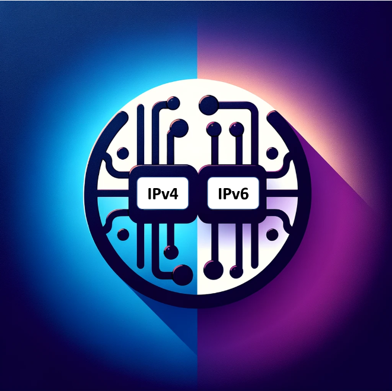

Routering & Switching behandelt de basisprincipes van datacommunicatie, de vaakst voorkomende protocollen en de configuratie van routers en switches, zodat de student een datanetwerk kan configureren om endpoints met elkaar te verbinden.
Leerdoelen
1. Instaleren en implementeren
Installeren en implementeren van netwerkonderdelen en -diensten in een fysieke -, virtuele - of cloudomgeving, volgens de noden van een organisatie of zijn gebruikers, of op basis van een bestaand plan. bv:
Implementeren van Vlan's
Configureren van inter-VLAN-Routing
Configureren van een layer 2 switch volgens voorgeschreven criteria

2. Troubleshooting
monitoring, testing en troubleshooting van netwerkonderdelen en -diensten en stelt op basis hiervan verbeterpunten voor en werkt structurele oplossingen uit voor vastgestelde problemen. bv:
Werken met loggings in windows
Configuratie en diensten
Configureren en beheren van netwerkonderdelen en -diensten om ze correct samen te laten werken, rekening houdend met de impact van wijzigingen.
Installeren, updaten en verwijderen van applicaties onder windows
Werken met Windows filesystemen
Configuratie van routing op de hosts
Configureren van processes
Remote beheer van de systemen.
Maken van back-ups in virtuele machines.
Maken en beheren van een forest in AD
Advisering
Informeren, adviseren en ondersteunt de organisatie of zijn gebruikers omtrent het correct en veilig gebruik van de netwerkomgeving.
toepassen van de best practice hardeningen
configureren van rechten op gebruikers, groepen en domain gebruikers in een forest op Windows omgevingen
beheren van files en folders in windows
Documenteren van systeemconfiguraties in een windows omgeving